OCR: du» [E - 0 x Claude Code Docs Engish Q search. Cutk- % ASkAI | Claude Developer Platform Getting started | Bulli with Claude Code Administration Configuration | Reference | AgentSDK | What New. Resources Getting started Choose your environment to get started. Most surfaces require a Claude subscription or sa oa: Anthropie Console account. The Terminal CLI and VS Code also support third-party providers. ceva questa menti. GGCe0O | Dediispapp: VAb cosi What you can do er Use Cinude Code evesyubere The fullfeatured CLI for working with Claude Code directly in your terminal. Edit files, run Nextsteps Core concepts commands, and manage your entire project from the command line. How Claude Code works To install Claude Code, use one of the following methods: Extend Claude Code Nativo install Recommended) | Homebrew _ WinGet. Explore the claude dctory ner Eapiore the content window sa macOS, Linux, WSL: Use Claudo Code fssì https: //etavde.at/instatt.sn | bas Store Instructions and Windows PowerShell Permission modes Common workiiows 95://c laude. ai/instatt.psì | tex Best practices Windows CMD: Platforms and integratione. Overvien cUPÙ -FSSL https://claude.ai/instalt.ond -o install.ond 65 instarì Claude Code n the web Claude Cod on desktop .
Vediamo come installare Cloud Code all'interno di Windows. Nel corso di queste lezioni userò Mac OS come sistema operativo perché ho un computer Mac e le differenze sono quasi nulle tra i due sistemi operativi. Solo nella fase iniziale c'è un po' di differenza nell'installazione, ma non vi preoccupate perché è molto molto semplice. La prima cosa è andare sulla documentazione ufficiale di Cloud, che trovate il link qua nelle risorse aggiuntive del corso. E abbiamo questo comando che dobbiamo mettere all'interno del terminale, quello che su Windows viene chiamato PowerShell. Quindi cosa facciamo? Ci apriamo il menu di Windows e qua dentro scriviamo proprio PowerShell oppure semplicemente cerchiamo il terminale. Lo vedete che è qua, però diciamo se volete qua facciamo PowerShell, facciamo proprio il filtro, ci esce Windows PowerShell. Per l'installazione io faccio Run as an Administrator, in italiano quindi lanciatelo come amministratore.
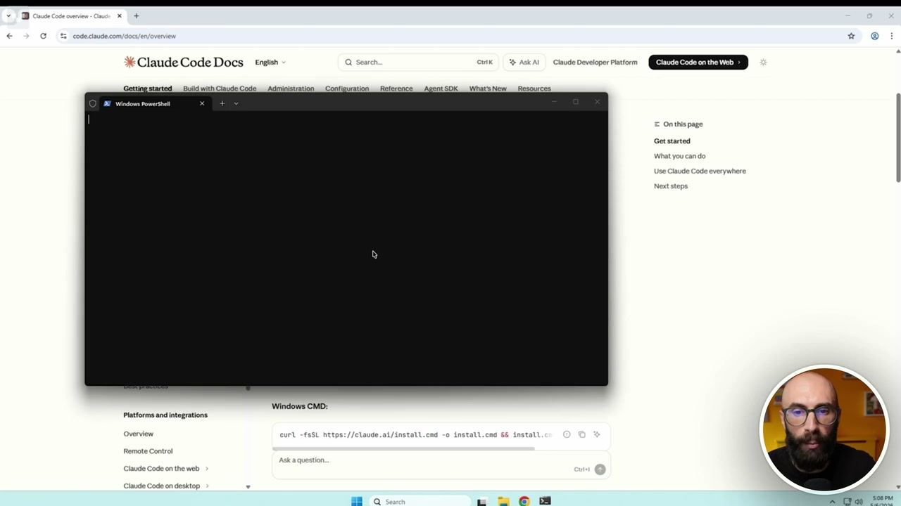
OCR: Claude Code Docs English started = Duc with Claude Code E Windows Powers Platforms and integratione Adinicisatico = Costiguatico Windows CMD: iaude Developer Pittorm RAZZI Get started *
E prendiamo questo comando che è scritto qua sulla documentazione ufficiale e lo copiamo e incolliamo. Quello è il comando dell'installazione, quindi vado qua, lo copio e me lo porto dentro il terminale.
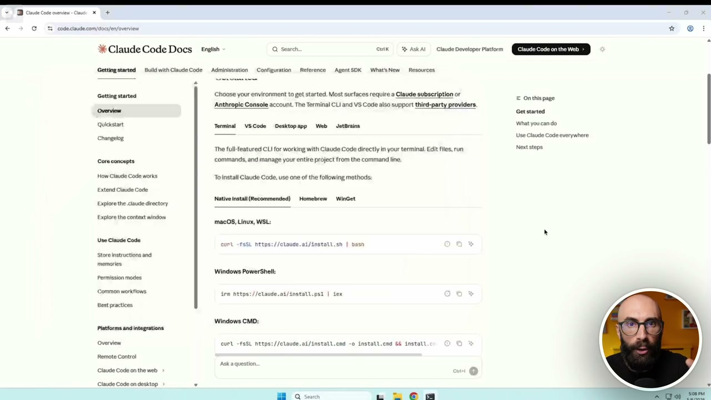
OCR: < 7 ED Cossecoseowenion Cav x [1 € © % codeciudecom(so/evovenien # © Claude Code Docs english Q search Cuik 33 ASKAI | Claude Developer Platform n the Web Getting started | Bulk with Claude Code | Administration Configuration | Reference -AgentSDK | WhatsNew _ Resources Getting started Choose your environment to get started. Most surfaces require a Claude subscription or con Anthropie Console account. The Terminal CLI and VS Code also support third-party providers. Overvion mirto rm ca [AI Qquicestart Terminal VSCode Desktopapp Web Jetorains Vihat you can do Changeloe Te Use Cide Code everyutere Te full-featured CLI for working with Claude Code directly in your terminal. Edît files, run Nextsteps Soir commands, and manage your entire project from the command line. How Claude Code works To install Claude Code, use one of the foliowing methods: Extend Claude Code Native install (Recommended) | Homebrew _ WinGet. Lapioro the claude dctory Vea (porn) Explore the contest windon macOS, Linux, WSL: Use Claude Code netos://etaude.a/instatt.sn | dash Store Instructions and Windows PowerShell: Permission modes Common workMows rn hetps://elaude.ai/instatl.pst | dex Best practices Windows CMD: Piatforms and integratione. Overvien GUPÙ -fSSL https://clavde.ai/install.cnd -o install.ond GG Anstati Claude Cod on the we Claude Code on desktop . BE QGoead 2 Ga
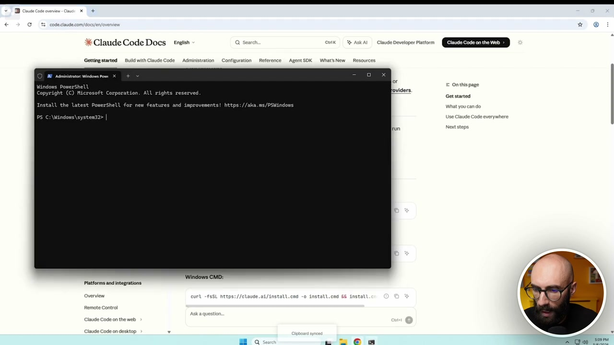
OCR: Claude Code Docs Engish x % laude Developer Platform Getting started | Buld with Claude Code Administration | Configuration | Reference - AgentSDK - WhatsNew Re Pomershe E Onthis page ht (C) Microsof ration. ALL r: Getstartod 1 the latest Powershell for nen features https: //alta.ms/PSwindons Platforms and integratione
Non vi preoccupate del terminale, il terminale a volte spaventa un po' perché questa cosa nera sembra Matrix. Alla fine è un'applicazione, ok? Molto potente, poco utilizzata, ma se usate questi strumenti di IA dopo un po' dovete prendere confidenza. Qua siamo semplicemente dando un'istruzione per fare l'installazione. Quindi copiamo quel comando, diamo invio e Cloud Code parte con l'installazione. Quindi su Windows sta partendo l'installazione. Ora questo cambia sempre da configurazione a configurazione, da computer a computer e ovviamente io nel corso non posso coprire tutte le casistiche. A volte, diciamo, l'installazione va diretta, funziona subito. In alcuni casi invece potrebbe essere necessario installare qualche cosa di aggiuntivo. Vi dice per esempio, guarda per far funzionare Cloud Code ti manca questa cosa, altrimenti non funziona. E infatti in questo caso cosa dice? Dice che manca Git. Anche qui non andrò nel dettaglio, diciamo è un piccolo software che serve per far funzionare Cloud.
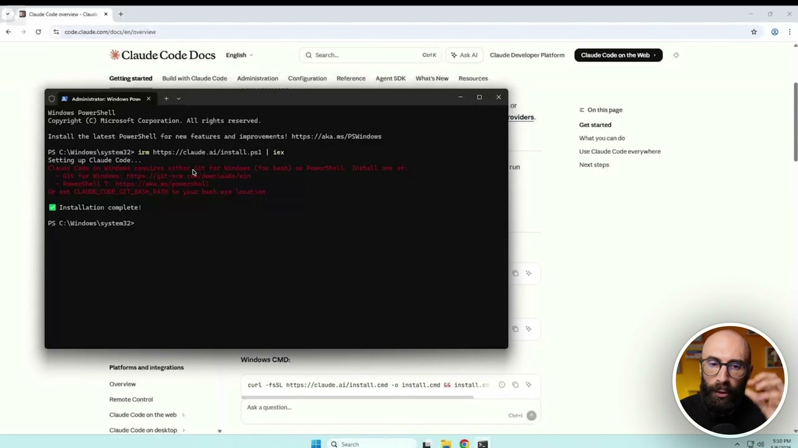
OCR: Claude Code Docs English iaude Developer Pittor RAZZI Gettingstarted | Bulkdwith Claude Code Administration | Configuration | Reference | Agent SK _ Whats New Windoms PowerShell Onthis page Copyright (C) Nic a l rights re Get started Install the latest Powershell for nen features and inprovenents! https: //aka.ns/P n rà 4 ps: //aka.ms/PSwindomw 5 C:\Mindons\systen32> ira https://claude.ai/4i Use Claude Code every Setting up Claude Code Platforms and integratione
Qualcuno di voi questo messaggio non l'avrà, perché magari ce l'ha già installato. A qualcuno invece potrebbe uscire. Allora adesso vediamo cosa fare. Semplicemente ci copiamo questo comando qua, vedete vi dice pure cosa dovete fare. Dice semplicemente copiati questa cosa qua e fai l'installazione. Quindi io mi copio questo indirizzo qua, che è il sito web di Git e me lo apro. Scusate.
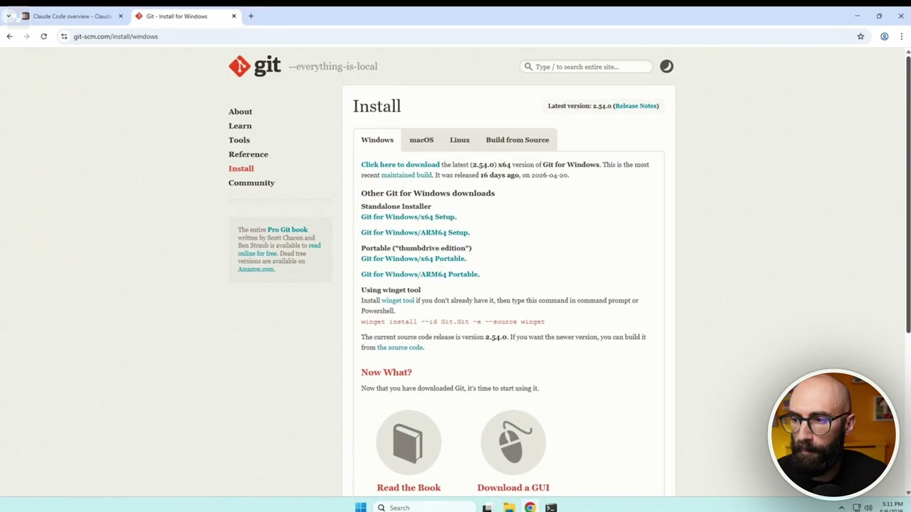
OCR: + ID Cioude Code overvien «Onu x @ Ge- intatto x * - 0 x € git-sem.cony'install/windows * © Lats vini 210 Clase it n Install o ) Learn Tools Windows | mac0S | Linux pull from Source Reference nec ere to dovnond e ast (54.0) 64 ves PI for Widow Ts the mt Commonity Other Git for Windows downloads standalone Installer Gltfor Windom/x6q Setup Pro Git book Git for Windows/ARM64 Setup. ei rendi Portable (“thumbdrive editi sana Git for Windows/x64 Portable. Git for Windows/ARM64 Portable. Using winget tool doni already have, then type his command in command prompt or Now What? RSS 9 Download a GUI c © © &\/
Mi sono aperto quindi il link di Git e mi dice cosa vuoi installare per Linux, per MacOS, per Windows. E io qua gli dico voglio l'installazione per Windows. Quindi clicco diciamo su questo link e adesso mi fa scaricare un'altra applicazione da installare. Anche questa completamente gratuita, non vi preoccupate, è molto molto facile da fare. Quindi clicchiamo su questo pulsante. Dovebbe partire il download del file .Exe, che vedete è partito qua in altro a destra. Appena è partito semplicemente lo clicchiamo e lo apriamo. E questa è un'altra installazione. Questa tra l'altro non è nemmeno da fare all'interno del terminale. Quindi è un'installazione tradizionale, è molto facile. Facciamo next. Qua ci chiederà un po' di cose che non vi preoccupate, potete anche andare avanti e installarle con le configurazioni di default. Perché tanto questa roba non ci serve diciamo in questa fase qua. Sono solo cose che serviranno a Cloud Code per funzionare. Quindi vi farà un po' di domande. Non mi ricordo adesso quante sono diciamo, ma sono tante.
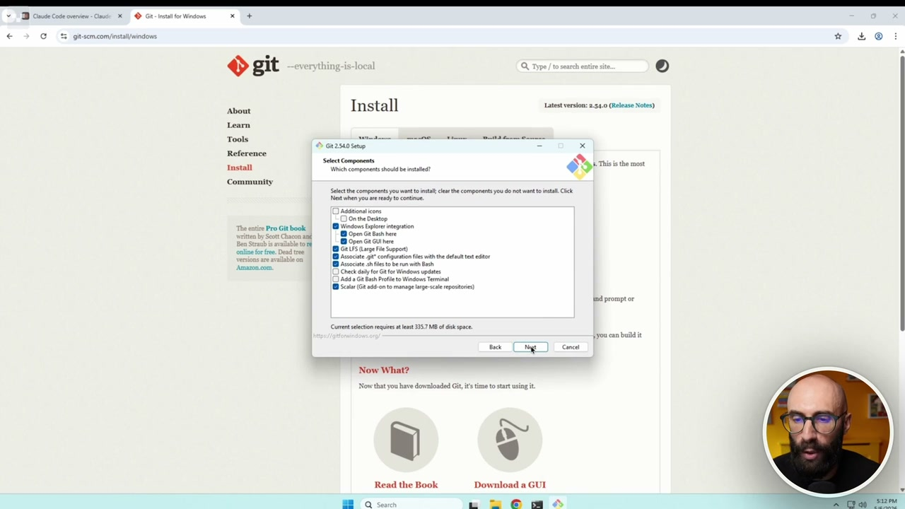
OCR: 5 gitsemeoninstal/vndon ©git a About Install Latest eion: 51.0 (Rolezse Note) Lear Tools " ca © azur Reference prora Community Ned np ren 1 cone 7 Pro Git book lie fre adipe Now What? ® Read the Book Download a E Gs e U € 0) &
Semplicemente voi andate avanti e ditegli sempre di sì lasciando le configurazioni iniziali. Questo se uno è un utente avanzato poi può diciamo smanettarci. Però diciamo per utenti che non l'hanno mai utilizzato potete lasciare tutto di default. Continuiamo a dare next, diciamo quindi a confermare le varie opzioni che ci fa scegliere. Non vi preoccupate, a me è particolarmente lento perché è una macchina virtuale, ma nel vostro caso sarà molto più veloce di così. Quindi continuiamo a dire avanti. E dopo qualche secondo diciamo l'installazione è completata. Quindi perfetto. Diciamogli anche questo qua. Ecco qua. Next. Next. Next. E ci siamo quasi. Abbiamo dato tutte le impostazioni. Adesso sta facendo l'installazione. Quando ha finito l'installazione di git dobbiamo ridare il comando. Quel comando di prima che abbiamo dato nel terminale che su Windows si chiama PowerShell. Semplicemente prima non è riuscito a fare l'installazione perché gli servivano alcune cose che sono presenti dentro questo pacchetto aggiuntivo.
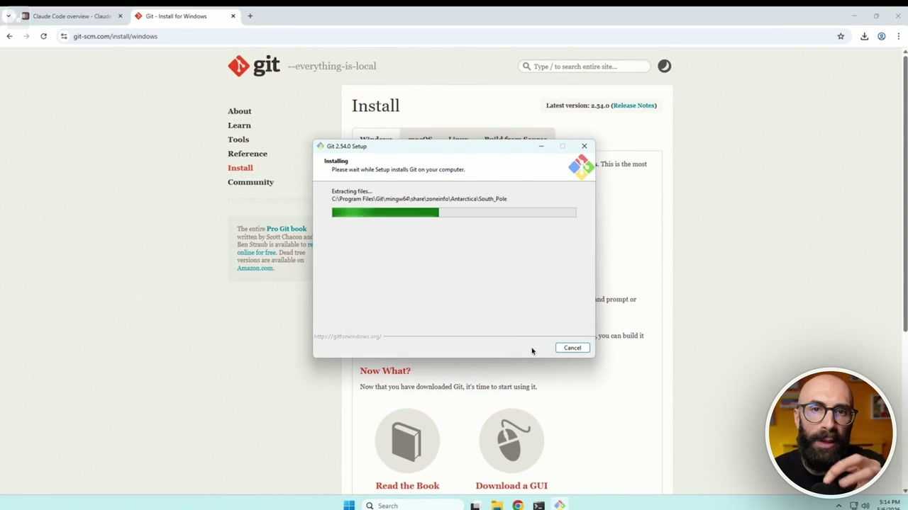
OCR: 5 gitsemconinstal/vindon ©git n Install Lear tools Reference tnstai Community Now What? a Ce Ri) Read the Book i a RN 9 Download a GUI = 26 mi 4 ri i the most P *
Chiamiamolo così che abbiamo chiamato git. Quindi aspettiamo che finisca l'installazione e torniamo nel nostro terminale.
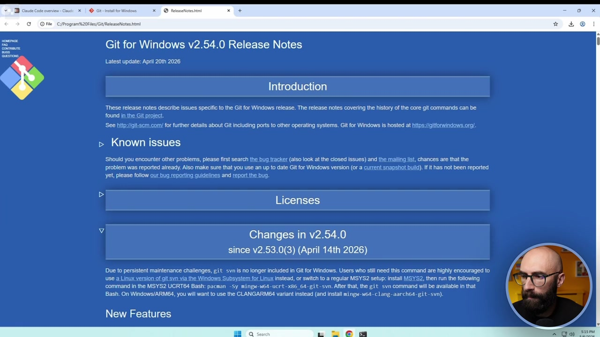
OCR: Git for Windows v2.54.0 Release Notes Latest update: Aprl 20th 2026 Introduction These release notes describe issues specific to the GIt for Windows release. The release notes covering the history of the core git commands can be found in the Git pro ‘See htip:/git-scm.conY for further details about Git including ports to other operating systems. Git for Windows is hosted at https:/gitforwindows.orgi »Known issues Should you encounter other problems, please first search the bug tracker (also look at the closed issues) and the malling list, chances are that the problem was reported already. Also make sure that you use an up to date Git for Windows version (or a current snapshot bull). If it has not been reported yet, please follow our bug reporting guidelines and report ihe bug. D * [e=SSS Vv Changes in v2.54.0 since v2.53.0(3) (April 14th 2026) Due to persistent maintenance challenges, git: svn ls no longer included in Git for Windows. Users who stili need this command are highiy encouraged to use a Linux version of glt sn via the Windows Subsystem for Linux instead, or switch to a regular MSYS2 setup: Install MSYS2, then run the following command in the MSYS2 UCRT64 Bash: pacman -Sy mingw-w64-ucrt-x86_64-git-svn. After that, the git. svn command will be available in that Bash. On Windows/ARM64, you will want to use the CLANGARM64 variant instead (and install mingu -w64-clang-aarch64-git-svn) New Features
Quando ha finito vi mostra una schermata di conferma. Diciamo la possiamo ignorare. Vi apre pure il sito per far vedere tutti i dettagli dell'installazione di git. Però questa roba qua non vi preoccupate, ignoratela. Apriamoci di nuovo il nostro terminale. Quindi torniamo in PowerShell che avevamo aperto in precedenza. E abbiamo, scusate ho cliccato due volte e l'ho chiuso. E siamo rimasti alla schermata di prima. Quindi abbiamo questo comando qua che non era riuscito a dare. Adesso lo prendiamo, lo copiamo e lo reincolliamo dentro. E quindi glielo diamo per la seconda volta. Quindi selezioniamo oppure lo prendiamo dal sito, copia. Vado qua e faccio incolla e gli do invio. E adesso a questo secondo giro, siccome lui ha git installato, quel pacchettino aggiuntivo che abbiamo messo dovrebbe procedere con l'installazione di Cloud Code. Appena finisce l'installazione lo lanciamo, vi faccio vedere due cosine al volo. E poi per il resto potete seguire anche il resto del modulo. Ecco qua, ci ha messo qualche secondo e ha detto installazione di Cloud è stata completata correttamente.
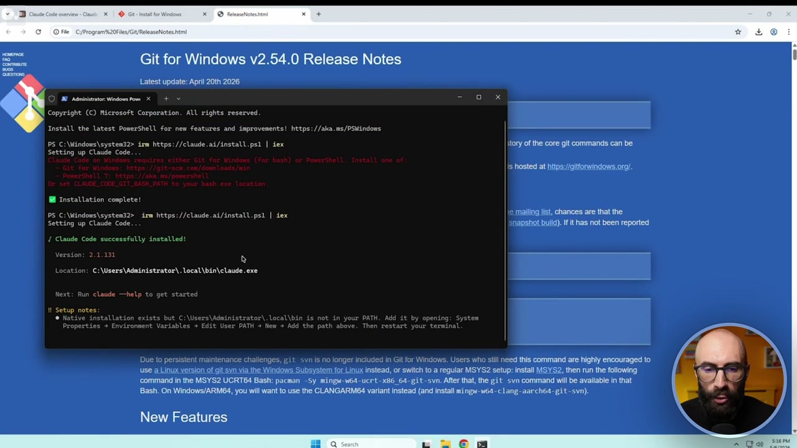
OCR: Git for Windows v2.54.0 Release Notes “% Latest update: April 20th 2026 RI Adrizirnice vindom pom x | - ox Copyright (C) Microsoft Corporation. ALL rights reserved PS C:\Windoms\systen32> irm https://claude.ai/install.ps1 | tex itory of the core glt commands can be Setting up Claude Code ‘s hosted at htips:/gitforwindows.org/ HI Installation complete! PS C:\Windoms\systen32> ira https://claude.ai/instatlpsì | dex maling Is, chances are that ine Setting up Claude Code napshot bulig). If it has not been reported ® C:NUsers\Adninistrator\. local \bin\claude. exe laude —help È Setup notes Due to p 3 va s si Jows. Users who stili need this command are highly encouraged to use a Linux version of git svn via the Windows Subsystem for Linux instead, or switch to a regular MSYS2 setup: install MSYS2, then run the following command in the MSYS2 UCRT84 Bash: pacman -Sy mingu-w64-ucrt-x86_64-git-svn. After hat, the git. svn command will be avallabie in that Bash. On Windows/ARMB4, you will want to use the CLANGARM64 variant Instead (and install mingu-w64- clang-aarchea-git-svn). New Features
Ci dice guarda che per farlo funzionare devi fare questa piccola modifica. Cioè devi prendere questa stringa qua e devi mettere nel tuo path. Allora questa roba qua può sembrare estremamente complessa ma non vi preoccupate, vi guido io passo passo. Ok? È più facile di quello che sembra. Cosa dobbiamo fare? Fondamentalmente adesso se noi andiamo qua dentro il terminale e scriviamo Cloud, quindi proviamo a dare il comando, non funzionerà. Perché Cloud l'abbiamo installato ma Windows non sa dove si trova. E infatti dice ma che è sto Cloud? Che vuoi? Dobbiamo dirgli dove si trova Cloud, dove l'abbiamo installato. Come la facciamo questa cosa? Prendiamo questo testo, questa stringa che ci ha dato qua. Vedete? Proprio copiate questo pezzettino di testo qua. Lo copiamo. Scusate, lo ho selezionato e non l'ho copiato. Quindi seleziono e copio. E poi ci dice qua esattamente cosa dobbiamo fare.
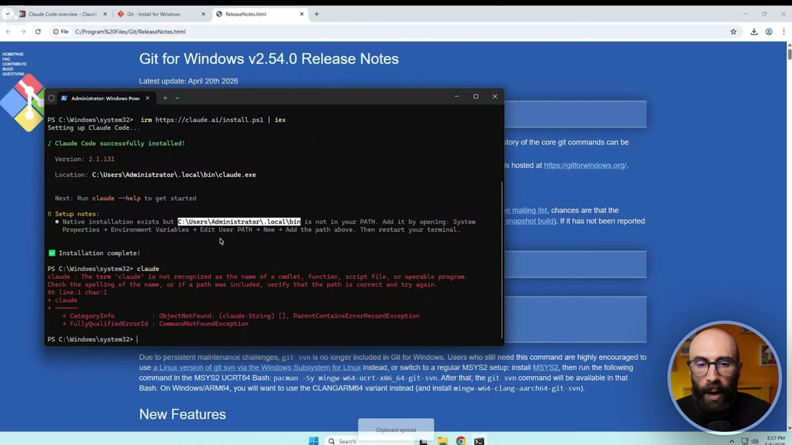
OCR: Git for Windows v2.54.0 Release Notes Latest update: April 20th 2026 PS C:\Windoms\system32> drm https://claude.ai/insta Setting up Claude Code - = sude Code successfully ed itory of the core git commands can be ‘s hosted at https:/gitforwindows.org/. C:\Users\Adninistrator..local\bin\claude. exe malling lst, chances are that ihe napshot buia). it has not been reported tl Setup notes I Installation complete! PS C:\Mindoms\systen32> claude PS C:\Windoms\systen32> | Due to p gini aleng din Gitto need this command are highiy encouraged to use a Linux version o lim via the Windows Subsystem for Linux Instead, or swch o a regular MSYS2 setup: Install MSYS2, then run he following command in the MSYS2 UCRT64 Bash: pacman -Sy mingw-w64-ucrt-x86_64-git-svn. After that, the git. svn command will be available in that Bash. On Windows/ARM64, you will want to use the CLANGARM64 variant Instead (and install mingw-w64-clang-aarchea-git-svn) New Features
Dice apriti le impostazioni di sistema. Quindi andiamo qua, ci apriamo le nostre belle impostazioni di sistema. System.
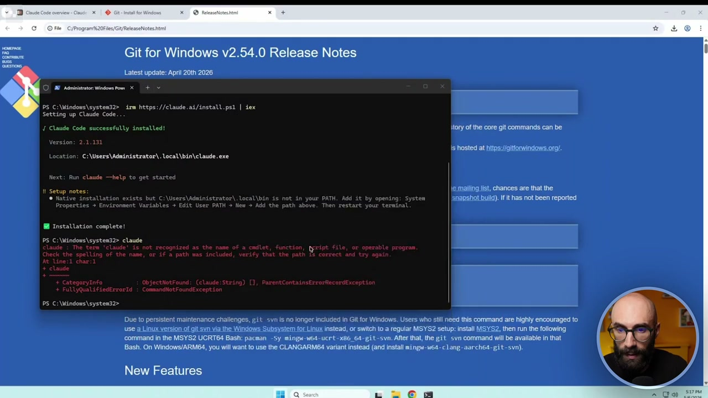
OCR: &" Git for Windows v2.54.0 Release Notes Latest update: April 20th 2025) PS C:\Windons\systen32> rm https://claude.ai/install.psì | dex Setting up Claude Code î C:\Users\Adninistrator\..local\bin\claude. exe tl Setup notes RI Installation conplete! PS C:\Mindoms\systen32> claude PS C:\Windoms\systen32> t synfs alt for Windows. Users who Due to persistent maintenance challenge: 0 longer include use a Linux version of git svn via the Windows itory of the core glt commands can be ‘s hosted at https:/gitforwindows.0rg/ « malling list, chances are that the snapshot build). ft has not been reported need this command are highiy encouraged to ubsystem for Linux instead, or switch lo a regular MSYS2 setup: Install MSYS2, then run the following command in the MSYS2 UCRTB4 Bash: pacman -Sy mingu-w64-ucrt-x86_64-git-svn. Atter that, the git. svn command will be avallabie in that Bash. On Windows/ARM64, you will want to use the CLANGARM64 variant instead (and install New Features ingw-w64-clang-aarchea-git-svn).
Properties. Ci apriamo le nostre belle impostazioni. Cerchiamo la voce con le variabili di sistema.
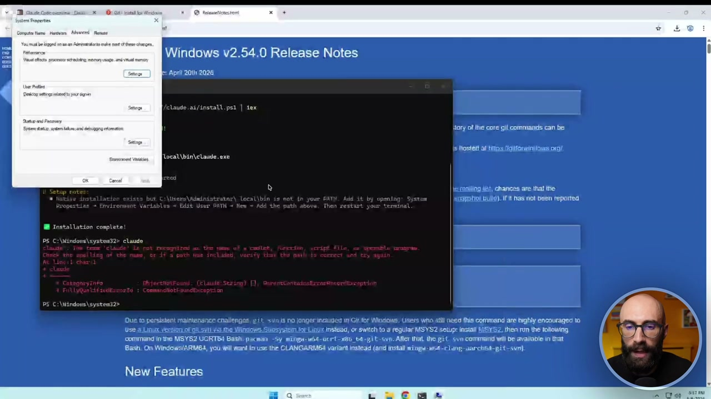
OCR: Windows v2.54.0 Release Notes April 201 2026 tony ol lhe core gii. commands can be = ostert all ins /igltfanzinilo pra Local\bin\claude. exe % cosling ist, chances are ii ie mei - - DI pu). IF has not been reported DS C-\Mindoms\systen32> claude PS C:\Mindows\system32> mance challe 1 iniGitor Sl need fhia command are tughly encourageci to vii vs he Singows instead, or switch to 3 regular NSYS2 setup insiali MSYSZ. Men run the following command nine MSYS2 UORTB4 Bash: pacman -Sy mingw-w64-ucr1-x86_ba-git-svn.Afler Ial ie gt. svn comment will be avallabie in lrat Bash. On Windows/ARMBA, you will vanî In'use the CLANGARIMBA varlant instead (and instali wing: wd-clang;-2archisd-pit-sun) New Features
Environment variables. Ovviamente a voi potrebbe essere in italiano, quindi queste cose le vedete leggermente diverse. Mi apro quindi il box con le variabili di sistema.
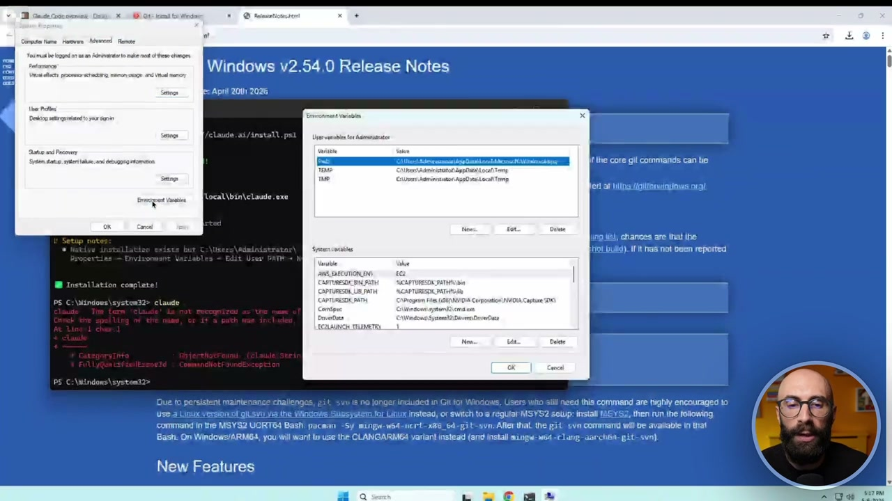
OCR: fanstatl. pa HE Installation complete PS C:\Wtndows\systen32> claude PS C-\stndon
Qua in basso vado a cercarmi, anzi no, ci consiglio di metterlo dentro user. Quindi diciamo in questo qua, vedete in questa lista che c'è qua, scelgo pat. Pat è questa variabile qui. E faccio modifica. Quindi clicco su edit e aggiungo una nuova voce. Ok? Qua gli devo semplicemente aggiungere. Quindi faccio new. E ci metto adesso anche quell'indirizzo che abbiamo copiato. Quindi dentro questa variabile sto aggiungendo questo indirizzo in colla. E faccio invio. Ho fatto. Faccio ok. Sembra complicatissima questa roba, ma non vi preoccupate. Ok? Vi ho portato proprio per mano. Stiamo dicendo semplicemente a Windows in che posto abbiamo installato Cloud. Qua chiudiamo tutto. Una volta fatta questa roba qua, per sicurezza chiudiamo la PowerShell. Perché così può rileggere le installazioni che abbiamo fatto. Quindi apriamoci di nuovo qua.
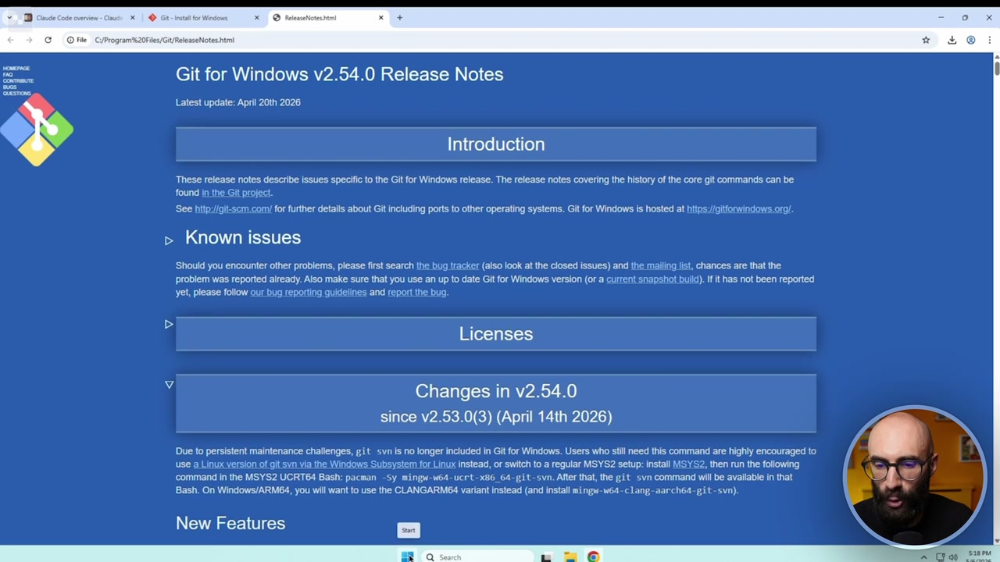
OCR: Git for Windows v2.54.0 Release Notes Latest update: Aprll 20h 2026 Introduction These release notes describe Issues specific 0 the Git for Windows release. The release notes covering the history of the core git commands can be found in the Git pro See hitip/gît-scm.com! for further details about Git including ports to other operating systems. Git for Windows is hosted at htips:/gitfonwindows.org a NIMESTESÌ Should you encounter other problems, please first search the bug tracker (also look at the closed issues) and the mallng list, chances are that the problem was reported already. Also make sure that you use an up to date Git for Windows version (or a current snapshot build) It has not been reported yet, please follow our bug reporting guidelines and report the bug. D * Licenses 4 Changes in v2.54.0 since v2.53.0(3) (April 14th 2026) Due to persistent maintenance challenges, git_ svn is no longer included in Git for Windows. Users who stili need this command are highiy encouraged to use a Linux version of git svn via the Windows Subsystem for Linux instead, or switch to a regular MSYS2 setup: install MSYS2, then run the following command in the MSYS2 UCRT64 Bash: pacman -Sy mingw-w64-ucrt-x86_64-git-svn. After that, the git. svn command will be avallabie in that Bash. On Windows/ARM64, you will want to use the CLANGARMB4 variant instead (and install mingu-w64-clang-aarch6a-git-svn) New Features [=
Facciamo PowerShell.
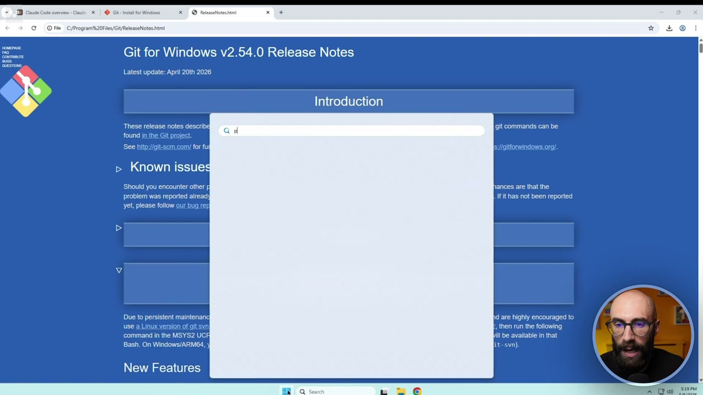
OCR: i Git for Windows v2.54.0 Release Notes Latest update: April 20th 2026 7 Introduction These release notes describ found in the Git project. ‘See hitps/git-scm.conY for fu ‘git commands can be |s/igittorwindows.org/. »Known issues ‘Should you encounter other hances are that the problem was reported alread) Ifit has not been reported yet, please follow our bug re; Db Due to persistent maintenandi hd are highiy encouraged to use a Linux version of glt svn , fhen run the following, command in the MSYS2 UCH ll be avallabie in that Bash. On Windows/ARMB4, it-svn). New Features
Clicchiamo sopra il terminale. E adesso se dico Cloud e premo invio, questa volta invece sa dove l'abbiamo installato ed è partito. Signori è finito qua. Sembrava complicatissimo fatto sotto Windows. In realtà è una cosa veramente veloce. Qui ci sono due o tre impostazioni da mettere. E poi c'è semplicemente da fare il login sul proprio account per collegare Cloud Code con quello diciamo che abbiamo il nostro abbonamento a Cloud. Una volta che avete fatto l'autenticazione, quindi vi ha fatto fare il login sul sito, che ovviamente qua ho tagliato perché c'erano i miei dati personali.
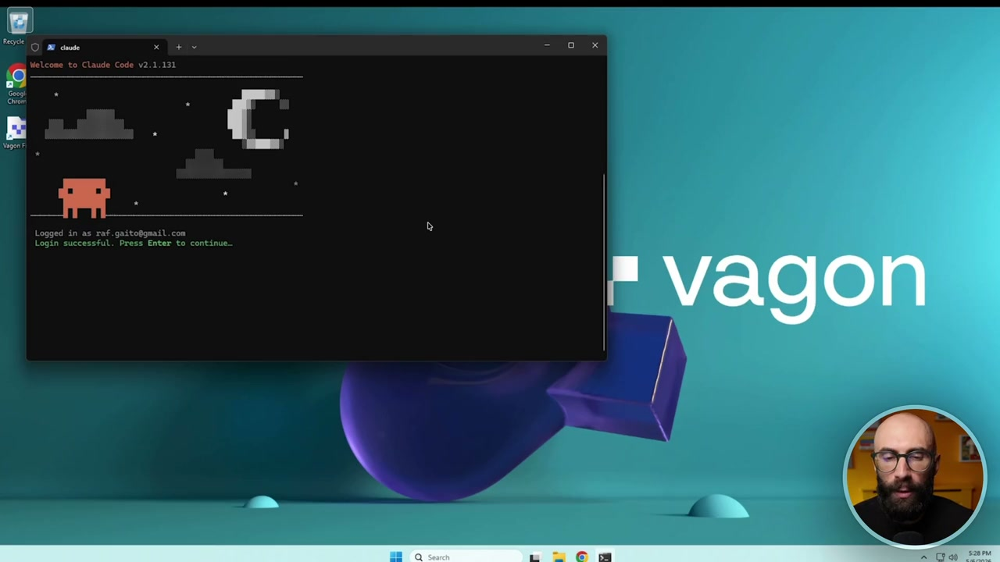
Lui ha collegato il vostro account di Cloud con Cloud Code. E vi dice ho fatto il login correttamente. Premo invio per continuare. Noi premiamo invio e ci dice guarda attenzione perché Cloud può fare degli errori. Attenzione perché c'è il rischio di prompt injection. Quindi lo sappiamo e dobbiamo fare sempre attenzione quando utilizziamo questi strumenti. Dice di nuovo premo invio per continuare. E poi dice vuoi lavorare all'interno di questa cartella. Noi dobbiamo dire assolutamente no. Perché questa è una cartella di sistema è pericolosissimo lavorarci dentro. Quindi scegliamo l'opzione 2 o semplicemente digitando 2 o spostandoci con la freccetta della tastiera su 2. E diciamo exit. Quello che dobbiamo fare in realtà è creare una cartella di lavoro. Quindi andiamo sul nostro desktop oppure nella cartella documenti o dove volete voi. E qua dentro vi create una nuova cartella. Quindi fate il new. Io ovviamente qua lo vedo in inglese e questa la chiamiamo per esempio Cloud Workspace.
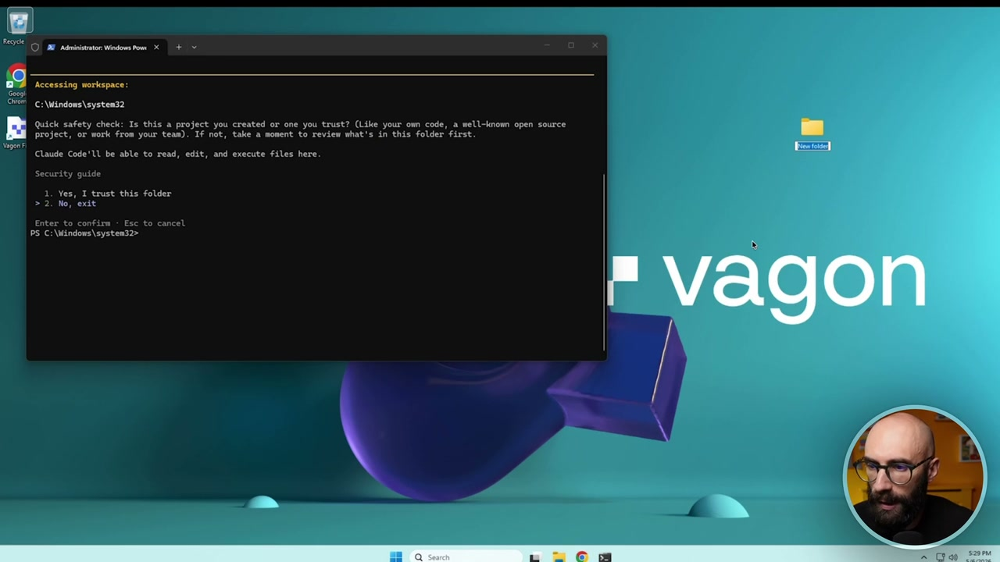
OCR: Accessing norkspace: C:\Windoms\systen32 Quick safety check: Is this a project you created or one you trust? (Like your om code, a mell-knom open source project, or work fron your team). IF not, take a monent to review what's in this folder first Claude Code'll be able to read, edit, and execute files here Yes, I trust this folder > 2. No, exit PS C:\Windoms\system32>
Voi la potete chiamare come volete voi. La potete chiamare Raffaele, cartella di lavoro. Quello che volete. L'importante è creare una cartella apposta per lavorarci con Cloud dentro. Perché noi diremo a Cloud di lavorare solo dentro quella cartella. Non la autorizzeremo a fare cose fuori da quella cartella. Questo è importante per motivi di sicurezza. Quindi adesso che abbiamo la cartella facciamo click destro sulla cartella. E qua ci apriamo il terminale. Quindi sappiamo che la cartella sulla quale stiamo lavorando è questo Cloud Workspace che abbiamo appena creato. Vedete è cambiato pure l'indirizzo che vediamo a schermo. Qua adesso scrivo Cloud di nuovo. Quindi do il comando Cloud. Non vi preoccupate perché questa è l'unica parte nella quale faremo delle cose usando il terminale. Poi subito nella prossima lezione vi faccio vedere che installeremo un'altra app che si chiama VS Code. E useremo Cloud Code da là dentro in realtà. Mi dice adesso mi stai dicendo che vuoi lavorare nella cartella Cloud Workspace.
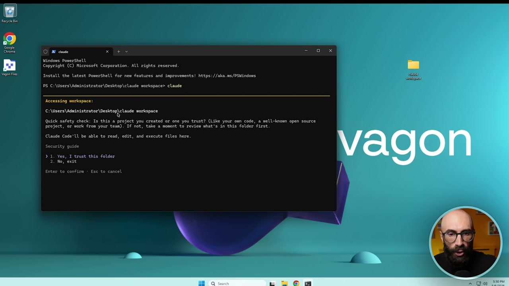
OCR: ic] gare Install the latest PowerShell for new features and inprovenents! https://aka.ns/PSwindows Eos Accessing norkspace C:\Users\Adninistratar\Deslktop\klaude norkspace Quick safety check: Is this a project you created or one you trust? (Like your om code, a mell-knomn open source project, or work from your tean). If not, take a moment to reviem mhat's in this folder first Claude Code'll be able to read,
Ti fidi? E stavolta gli dico sì. Dico dentro questa cartella voglio lavorare. E come ci accorgiamo che è andato tutto a buon fine? Perché adesso abbiamo finito non c'è nient'altro da fare. Gli possiamo chiedere per esempio ciao che modello sei? E adesso ci dovrebbe rispondere che è Cloud 4.7 Nel momento in cui sto registrando. Poi magari l'avete visto tra qualche mese è uscito Cloud 5, Cloud 10 o quello che è. E vi faccio vedere anche banalmente. Ora proviamo a creare un primo file. Vi faccio vedere che Cloud è capace di scrivere direttamente sul vostro computer. Anzi questa cartella nel frattempo me la apro. Non vi preoccupate del fatto che qua lo vedete estremamente lento.
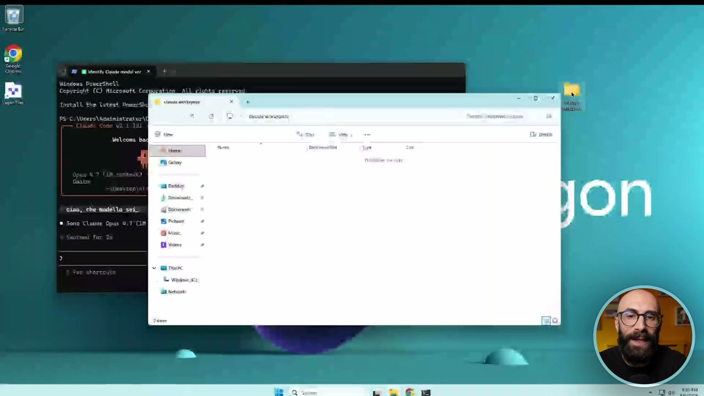
OCR: © (©
E perché ovviamente io sono dentro una macchina virtuale. Quindi lo sto simulando Windows perché non ce l'ho veramente sul mio computer. Quindi vi lascio questa qua aperta e poi mi metto il terminale qua in alto. Quindi dice sono Cloud 4.7 Il modello di punto della famiglia di Cloud. Adesso qua gli dico crea un file di testo. Crea un file di testo e dentro mettici l'elenco delle cose che puoi fare per me considerando che non sono un programmatore. Esempio molto semplice. Nel resto del corso vedremo cose molto serie e molto avanzate. Questo serve solo per farvi capire che 1 l'installazione è andata a buon fine e su Windows è semplicissima. Non vi dovete preoccupare. E 2 che sta funzionando e lo vediamo perché lo stiamo utilizzando e soprattutto è in grado poi di scrivere fisicamente dei file dentro il nostro computer.
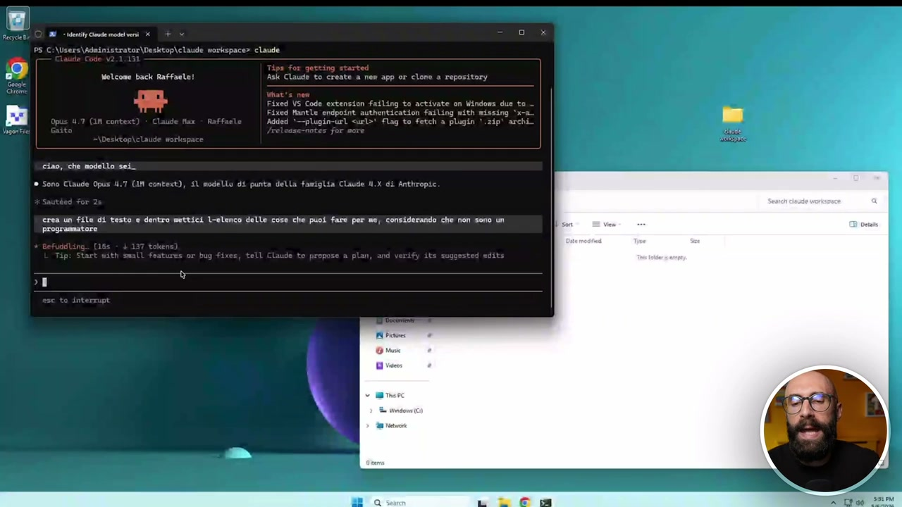
OCR: fe) Melcome back Raffaele Ask Claude to create a ne ciao, che modello sei crea un file di testo e dentro mettici l'elenco delle cose che puoi fare per me, considerando che non sono un programatore
Può leggere dei file e può scrivere dei file. Nelle prossime lezioni diventerà una cosa molto importante. Dice vuoi crearmi questo file? Mi autorizzi? Qua gli diciamo di sì. E adesso nella cartellina qua a destra vediamo comparire un file. Cosa posso fare per te? Se ci apriamo questo file con un doppio clic è un file di testo che ha creato il nostro Cloud Code.
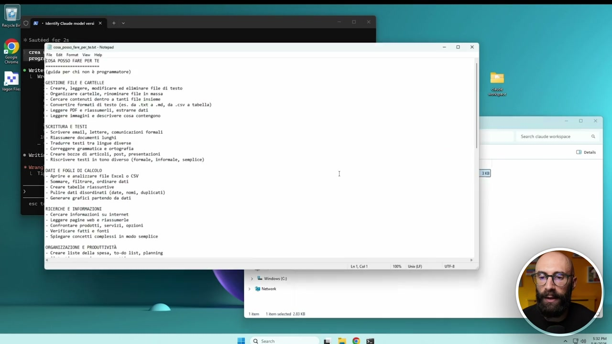
OCR: progri osa poso rane mea e decida per chi non è programmatore) [cestione erue € canveute Creare, leggere, modificare ed elininare file di testo Cercare contenuti dentro a tanti file insieme Convertire Formati di testo (es. da stxt è ‘né, da ccsv a tabella) Leggere POF © riassumerli, estrarne dati Leggere imagini e Gescrivere coso contengono scarmmvea € resti Scrivere email, lettere, comunicazioni formali Riassimere docimenti Iurghi Traderre testi tra Lingue diverse Correggere grammatica © ortografia Creare bozze di articoli, post, presentazioni Riscrivere testi In tono diverso (formale, informale, semplice) Dari € FOGLI DI caLcoLO Aprire e analizzare file Excel 0 (SV Somure, Filtrare, ordinare dati Creare tabelle risssuntive Pulire dati disordinati (date, nomi, duplicati) Generare grafici partendo da doti Cercare Informazioni su internet Verificare Fatti e fonti Spiegare Concetti complessi In modo semplice loncuazzazione € PecovtTIVI
Signori l'installazione su Windows è finita. Siete pronti ad andare nella prossima lezione la quale installiamo VS Code facilissimo e poi inizieremo a usare Cloud Code da là dentro. Quindi del terminale vi potete dimenticare così non vi spaventate.